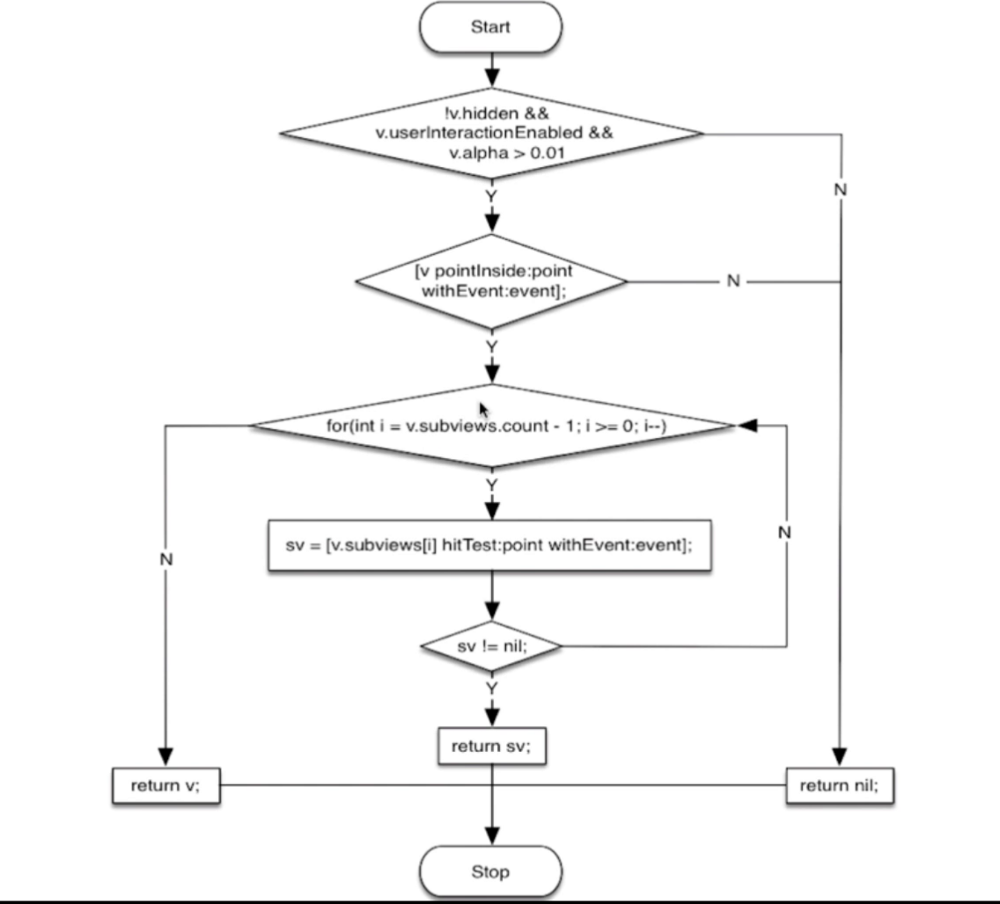
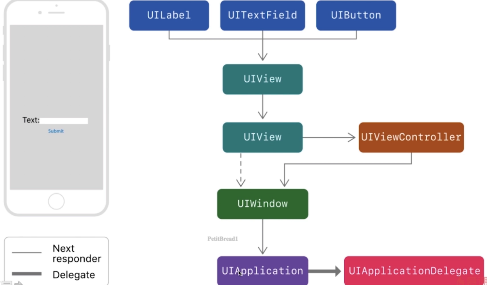

1.3.1UIView和CALayer
UIView显示在屏幕上归功于CALayer，通过调用drawRect方法来渲染自身的内容，调节CALayer属性可以调整UIView的外观，UIView继承自UIResponder，比起CALayer可以响应用户事件，Xcode6之后可以方便的通过视图调试功能查看图层之间的关系
UIView是iOS系统中界面元素的基础，所有的界面元素都继承自它。它内部是由Core Animation来实现的，它真正的绘图部分，是由一个叫CALayer(Core Animation Layer)的类来管理。UIView本身，更像是一个CALayer的管理器，访问它的跟绘图和坐标有关的属性，如frame，bounds等，实际上内部都是访问它所在CALayer的相关属性
UIView有个layer属性，可以返回它的主CALayer实例，UIView有一个layerClass方法，返回主layer所使用的类，UIView的子类，可以通过重载这个方法，来让UIView使用不同的CALayer来显示，如：
- (class) layerClass {
// 使某个UIView的子类使用GL来进行绘制
return ([CAEAGLLayer class]);
}
UIView的CALayer类似UIView的子View树形结构，也可以向它的layer上添加子layer，来完成某些特殊的显示。例如下面的代码会在目标View上敷上一层黑色的透明薄膜。
grayCover = [[CALayer alloc]init];
grayCover.backgroudColor = [[UIColor blackColor]colorWithAlphaComponent:0.2].CGColor;
[self.layer addSubLayer:grayCover];
补充部分，这部分有深度了，大致了解一下吧，UIView的layer树形在系统内部被系统维护着三份copy
逻辑树，就是代码里可以操纵的，例如更改layer的属性等等就在这一份
动画树，这是一个中间层，系统正是在这一层上更改属性，进行各种渲染操作
显示树，这棵树的内容是当前正被显示在屏幕上的内容
这三棵树的逻辑结构都是一样的，区别只有各自的属性
1.3.2事件传递
// 此方法返回的View是本次点击事件需要的最佳View
- (UIView *)hitTest:(CGPoint)point withEvent:(UIEvent *)event
// 判断一个点是否落在范围内
- (BOOL)pointInside:(CGPoint)point withEvent:(UIEvent *)event
1.当iOS程序中发生触摸事件后，系统会将事件加入到UIApplication管理的一个任务队列中
2.UIApplication将处于任务队列最前端的事件向下分发。即UIWindow。
3.UIWindow将事件向下分发，即UIView。
4.UIView首先看自己是否能处理事件，触摸点是否在自己身上。如果能，那么继续寻找子视图。
5.遍历子控件，重复以上两步。
6.如果没有找到，那么自己就是事件处理者。如果
7.如果自己不能处理，那么不做任何处理。
其中 UIView不接受事件处理的情况主要有以下三种
1）alpha <0.01
2)userInteractionEnabled = NO
3.hidden ＝ YES.
这个从父控件到子控件寻找处理事件最合适的view的过程，如果父视图不接受事件处理（上面三种情况），则子视图也不能接收事件。事件只要触摸了就会产生，关键在于是否有最合适的view来处理和接收事件，如果遍历到最后都没有最合适的view来接收事件，则该事件被废弃。

1.3.3视图事件响应

- (void)touchesBegan:(NSSet *)touches withEvent:(UIEvent *)event;
- (void)touchesMoved:(NSSet *)touches withEvent:(UIEvent *)event;
- (void)touchesEnded:(NSSet *)touches withEvent:(UIEvent *)event;
- (void)touchesCancelled:(NSSet *)touches withEvent:(UIEvent *)event;